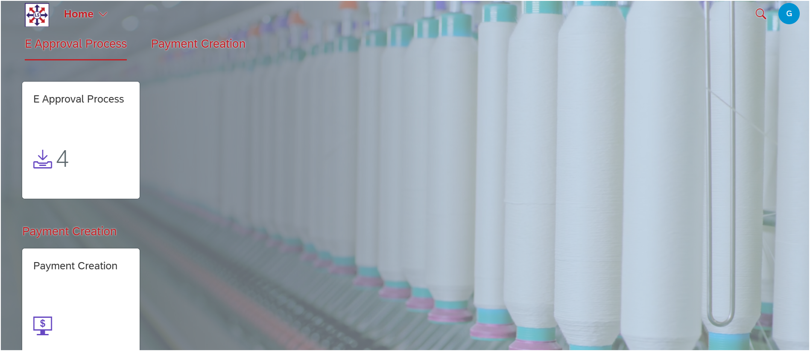
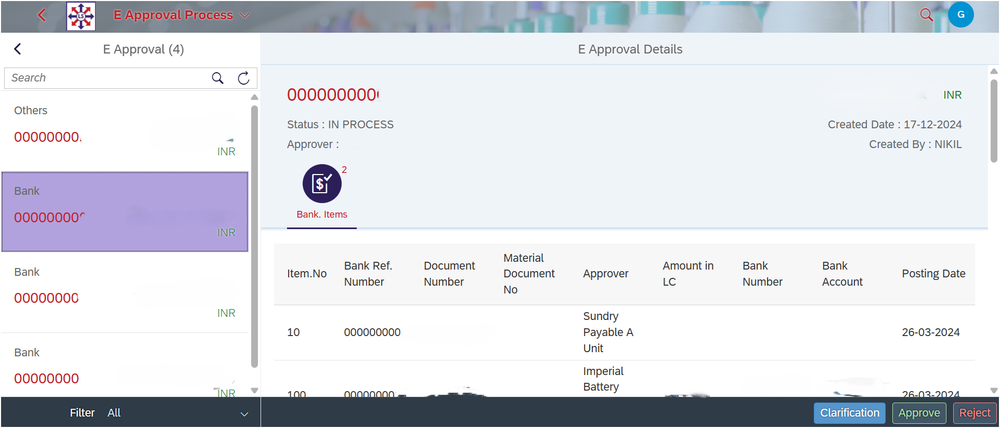

Client Overview
A leading Payments Bank serving a diverse corporate base aimed to modernize its digital transaction infrastructure by integrating secure automation with their SAP ERP system.
Business Challenge
Manual, insecure, and disconnected payment processes were slowing down operations, increasing error rates, and complicating audits. The absence of real-time SAP integration posed serious limitations in speed, accuracy, and security.
Our Solution: Secure Payment API Automation
We delivered a robust, encrypted API-based solution integrated with SAP. It automates payment processing and includes a custom-built SAP Fiori application to facilitate secure, real-time approvals.


Key APIs Developed
- ✔ Access Token API: Time-bound, one-time token for secured bank API access.
- ✔ Initiate Payment API: Encrypted (AES/CBC/PKCS5Padding) transaction support for IFT, RTGS, NEFT, IMPS.
- ✔ Status Request API: Real-time status and UTR retrieval via message ID.
- ✔ SAP Integration: Auto-push of transactions and updates from within SAP.
Additional Features
- ✔ Full automation on SAP save actions
- ✔ Supports high-volume concurrent requests
- ✔ SAP custom dashboard for Unique Bank Reference ID tracking
- ✔ SAP Fiori app for secure approval with role-based access
Business Impact & Results
- ✔ Reduced manual effort and operational delays
- ✔ End-to-end encryption and token-based security
- ✔ Faster, high-volume transaction processing
- ✔ Real-time audit visibility with custom SAP reporting
- ✔ Streamlined approvals via SAP Fiori interface
Why This Matters for Your Business
Financial institutions can transform their operations with this solution, gaining secure, efficient, and fully integrated SAP-based payment automation.
- ✔ Speed up payments and eliminate manual tasks
- ✔ Achieve compliance with stringent security protocols
- ✔ Improve internal audit readiness and customer experience